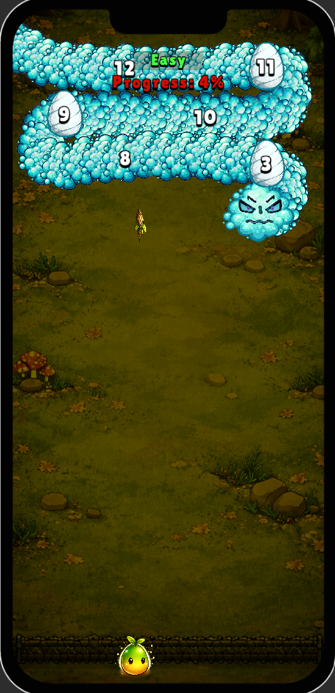
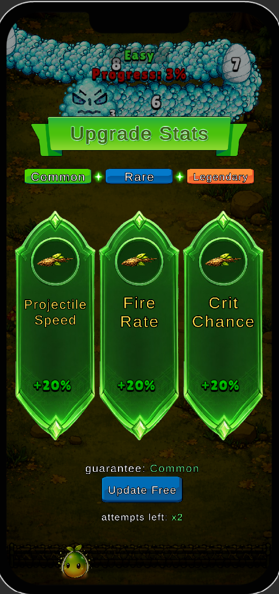

1 / 5
01 · Architecture, lifecycle & validation
Last Seed Survivor
An architecture-first Unity 6 mobile auto-shooter with engine-free domain state, explicit frame orchestration, transactional pooled lifecycles, and project-wide validation.
- Reward generation, policy, commit, application, presentation, and guarded ad operations have separate ownership and failure behavior.
- Segmented-worm spawning rolls back completed stages in reverse order, while combat, movement, balance, and presentation remain separate.
- The current gate covers the project build, 299 EditMode tests, 29 PlayMode tests, configuration and serialized-reference checks, and Zenject validation for three scenes.